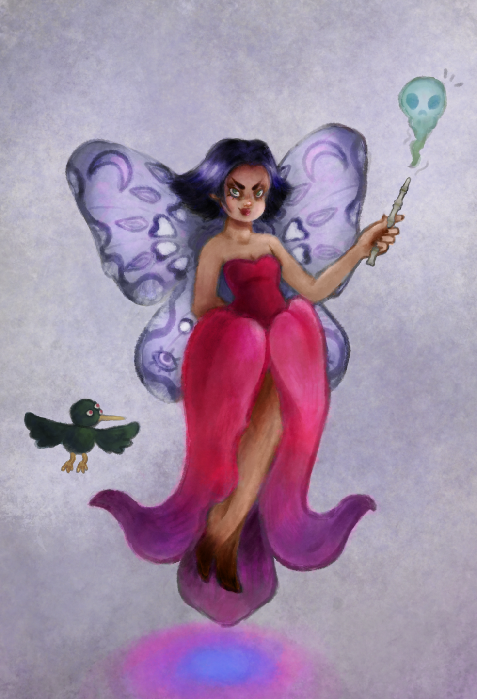
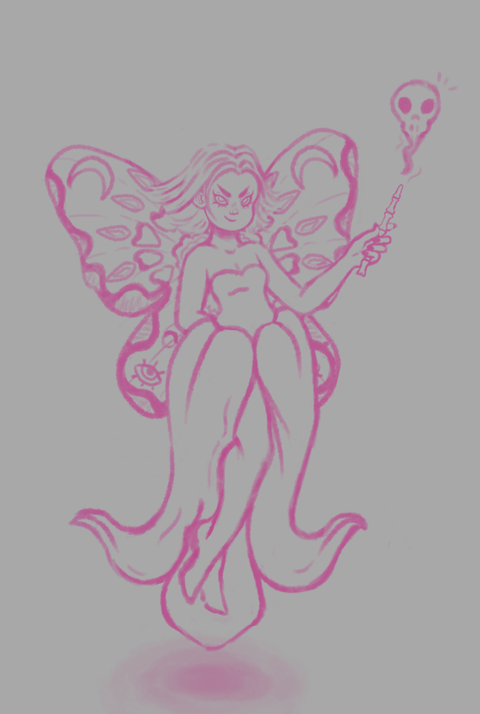

Home / Dicentra
Dicentra

“Dicentra espictabilis” il nome scientifico del Cuore di Maria, il fiore che da il nome al personaggio del design sovrastante. Dicentra è una fata per nulla benevola, che indossa un Cuore di Maria come vestito, impugna una bacchetta di ossa umane e si lascia accompagnare da un uccellino con tre occhi. L’idea era quella di ritrarre una fata come realmente queste sono nel folklore e spesso nelle fiabe: non amichevoli nei confronti degli esseri umani, rompendo così il luogo comune delle fatine sempre gentili e benevole. Durante la sua produzione mi sono lasciata ispirare parecchio da disegni preparatori di “Trilli”, la serie e saga di film spin-off di Peter Pan della Disney. Studio di cui sono celebri molteplici fate che rappresentano lo stereotipo di cui parlavo prima. Così come per il ritratto della pagina precedente affianco al disegno è osservabile la bozza e una foto del Cuore di Maria. Ho usato inoltre la stessa tecnica di colorazione: dal bianco e nero ai colori.